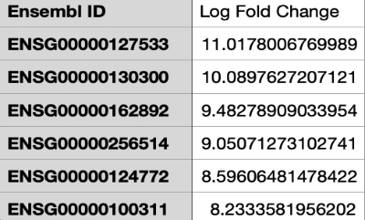
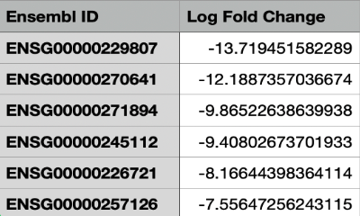

Endotoxin Detection in JUUL Pods
Investigating possible industrial contamination of JUUL e-liquid
We observed if JUUL pod’s
liquid has detectable endotoxin concentrations. Due to recent bans on certain flavors of
e-liquids, the current most popular JUUL flavor, menthol, e-liquid was tested for endotoxin
concentration. A Genescript ToxinsensorTM chromogenic Limulus Amebocyte Lysate (LAL)
assay was used to assess the presence of endotoxins. We created a standard curve with known
endotoxin concentrations and plotted it against absorbance values at 545nm of light in order to
evaluate the levels of endotoxins of the test solution. There were no detectable endotoxins with
the menthol pod's e-liquid at no dilution and dilution factors of 5, 7.5, and 10.
Absorbance values at 545nm of the tested menthol e-liquid with no dilution and dilution factor of
5, 7.5, and 10 were .023, .034, .017, .020 respectively. These values are well below the
absorbance values for endotoxin detection between .1 and 1 EU/ml. There are no FDA
standards for endotoxin levels present in ECs; however, sterile water for intravenous injection is
.25 EU/ml. Medical devices that interact with the cardiovascular system must have a
concentration of <.5 EU/ml. This means that if there were any endotoxins present in the JUUL it
e-liquid it is insignificant as the levels the human body is not affected by these levels.
2020
RNA-Seq Analysis
Differential Gene Expression of Ischemic Cardiac Pericytes
We investigate differential gene expression of healthy atrial tissue pericytes versus atrial pericytes that suffered failing, end-stage ischemic heart disease. Raw RNAseq data of ischemic end-stage heart disease atrial pericytes and healthy atrial pericytes were filtered, edited, and analyzed to acquire differentially expressed genes. Functional analysis was then carried out on the 508 differentially expressed genes to categorize the genes functions. Of the 508 differentially expressed genes, 372 genes were upregulated and 136 were downregulated. The terms to describe the top 3 Gene Ontology (GO) sets are: 1.) extracellular region, 2.) homophilic cell adhesion via plasma membrane adhesion molecules, and 3.) extracellular space. These findings may give insight into cardiac pericyte function and their pathophysiological role during ischemia.
All data was analysed with R. RNA quantification was achieved with kallisto's psudoalignment, and differential gene expression analysis was handled with EdgeR.

The top 5 known upregulated genes are depicted with their Log fold change.The 4th gene listed encodes for an uncharacterised protein and therefore is skipped because not much is known about it which results in 6 Ensembl gene IDs being listed. The Ensembl gene IDs were converted into HUGO Gene Nomenclature Committee (HGNC) terms and symbols: F2R like thrombin or trypsin receptor 3 (F2RL3) [ENSG00000127533]; plasmalemma vesicle associated protein (PLVAP) [ENSG00000127533]; interleukin 24 (IL24) [ENSG00000162892]; A uncharacterised protein [ENSG00000256514]; copine 5 (CPNE5) [ENSG00000124772]; platelet derived growth factor subunit B (PDGFB) [ENSG00000100311].

The top 5 known downregulated genes are depicted with their Log fold change.The 3rd gene listed encodes for an uncharacterised protein and therefore is skipped because not much is known about it which results in 6 Ensembl gene IDs being listed. The Ensembl gene IDs were converted into HUGO Gene Nomenclature Committee (HGNC) terms and symbols: X inactive specific transcript (XIST) [ENSG00000229807]; TSIX transcript, XIST antisense RNA (TSIX) [ENSG00000270641]; Uncharacterised protein [ENSG00000271894]; SMARCA5 antisense RNA 1 (SMARCA5-AS1) [ENSG00000245112]; eukaryotic translation elongation factor 1 delta pseudogene 2 (EEF1DP2) [ENSG00000226721]; FOXG1 antisense RNA 1 (FOXG1-AS1) [ENSG00000257126].
2021
Cursor Tracking
Images of the HTML document were programmed dynamically to respond to the position of the cursor in relation to the window.
2023
Real-Time Application (RTA)
Massachusetts Bus Tracker
click Implements google maps JavaScriptAPI with Massachusetts bay transportation authority (MBTA)
V3 API to show where the buses are in a specified route from Nubian Station to Havard Square.
Font Awesome Javascript API was used for icons representing the google maps API markers. The icon color represents if the bus is inbound (bus is heading to Nubian Station) or outbound (bus is heading to Harvard Square).
2023
window border detection
The Pac Man image is tracked for its position on the screen to determine if it has encounterd any of the four window edges. Once coming into contact with any of the edges, the image will move in respective axis's opposite dirrection. In addition, if the imge encounterd one of the two edges associated with the boundaries of the width of the window, the image will be reflected over the y-axis.
2023
Cryptosystems
Primality testing
Based on the fundamental theorem of arithmetic, stating that any natural number greater than 1 has a unique factorization of prime numbers, I created a program to determine if a given number is prime. My algorithm will not return Charmichael numbers as psuedoprimes, they will be correctly be labled as composite numbers. This project highlights key important concepts in understanding the princibles behind cryptosystems and computer architecture.
Try it out bellow! The max digit length is 6 digits to prevent long computational times.
2023